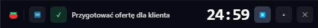
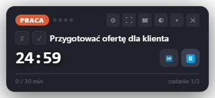
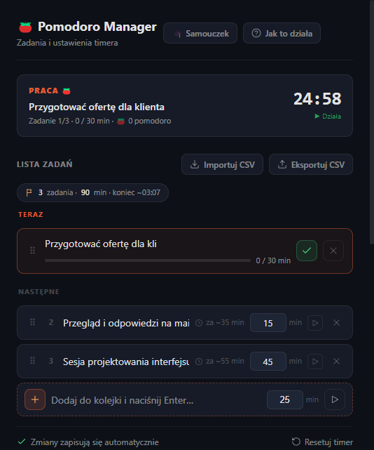
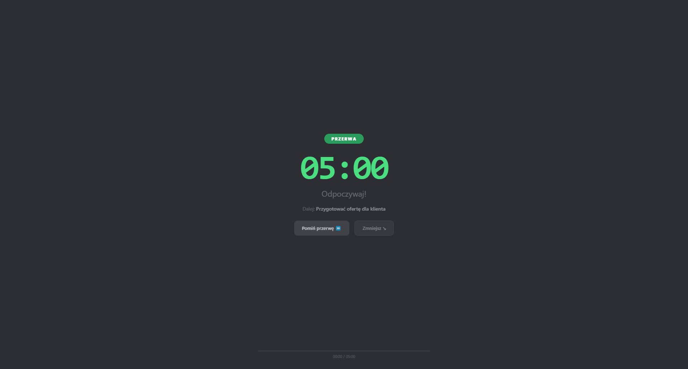
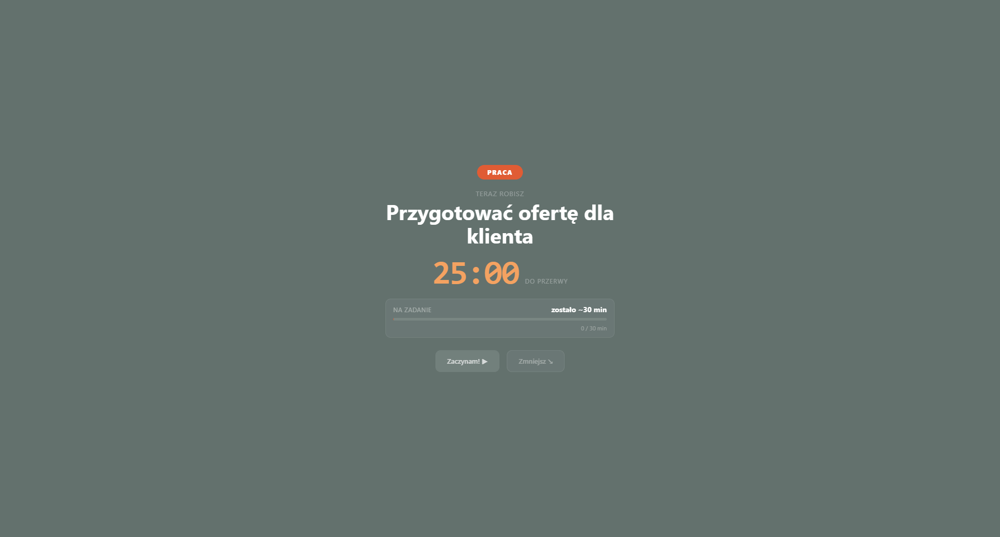
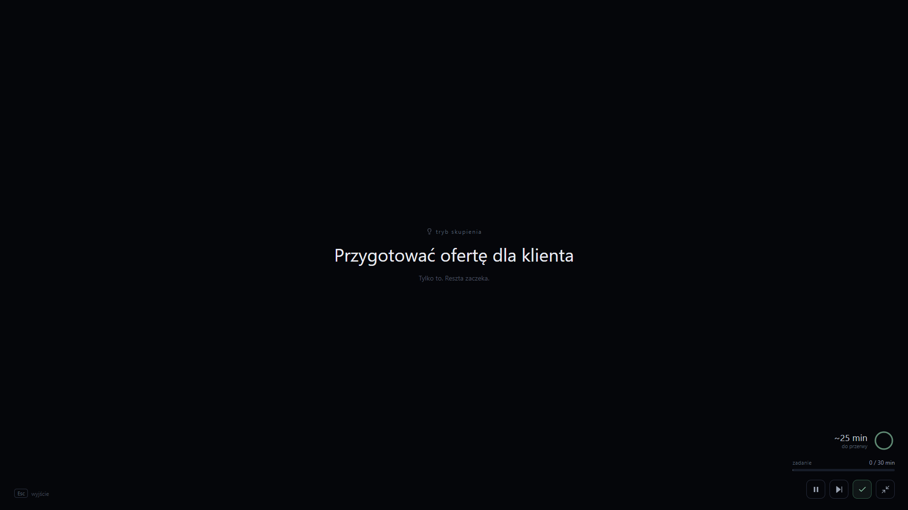

Aplikacja startuje zwinięta — jako wąska mini-listwa nad paskiem zadań, przy prawej krawędzi ekranu. Celowo zasłania systemowy zegar: w tym miejscu masz teraz swój licznik Pomodoro z bieżącym zadaniem, zamiast godziny.
Żeby rozwinąć pełny widżet na środku, użyj skrótu AltGr + M albo przycisku ▴ na listwie. Tym samym skrótem zwiniesz go z powrotem.

Widżet leży na przezroczystej nakładce, która domyślnie przepuszcza kliknięcia do okien pod spodem — możesz normalnie pracować w innych programach.
Najedź myszą na widżet, żeby jego przyciski stały się aktywne. Żeby przesunąć widżet w inne miejsce, po prostu złap go i przeciągnij — nowa pozycja zostaje zapamiętana.

Przyciskiem ⚙ na widżecie (lub skrótem AltGr + T) otwierasz Managera — tam dodajesz zadania i ustawiasz każdemu budżet minut. Zadania zapisują się same, bez przycisku „Zapisz".
Na widżecie i na listwie ✓ (ukończ) oraz ✗ (pomiń) stoją przed nazwą zadania, a pasek postępu pokazuje, ile z zaplanowanego czasu już zeszło (przekroczenie budżetu zmienia go na czerwono).


Gdy blok pracy się kończy, na cały ekran wysuwa się kurtyna przerwy — krótka jest zielona, a długa (co kilka pomodoro) niebieska. To sygnał, żeby naprawdę odpocząć.
Po przerwie pojawia się ekran „PRACA" z następnym zadaniem i czasem, jaki na nie zostaje. Kliknij „Zaczynam!" albo „Zmniejsz", żeby wrócić do widżetu.

Przyciskiem ⛶ na widżecie albo skrótem AltGr + F wchodzisz w pełnoekranowy tryb skupienia: czarny ekran z samą nazwą bieżącego zadania i minutnikiem w rogu — nic nie rozprasza.
Wchodzisz w niego tylko w fazie pracy. Wychodzisz klawiszem Esc; Enter lub Spacja startuje i pauzuje odliczanie.
Wszystkie działają globalnie (na Windows AltGr = Ctrl+Alt):
| AltGr + P | start / pauza |
| AltGr + K | pomiń fazę (praca ↔ przerwa) |
| AltGr + M | zwiń / rozwiń widżet |
| AltGr + F | tryb skupienia |
| AltGr + D | ukończ bieżące zadanie |
| AltGr + T | otwórz Managera |